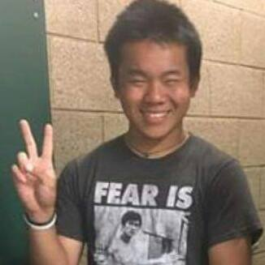
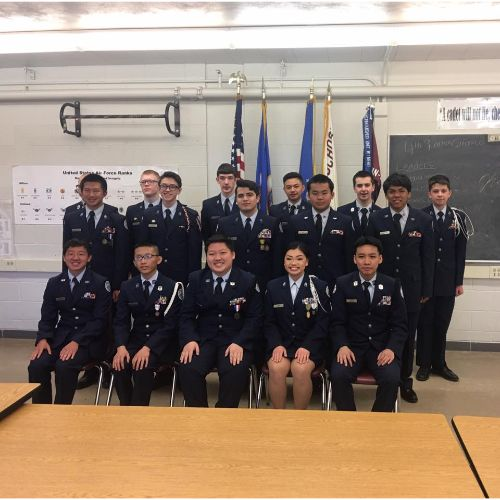

More About Me
Who am I?
{kind=link}
I was born in Saint Paul, Minnesota. I have lived in Saint Paul all my life. I grew up with very strict parents who were also very supportive of their kids. Because of them, I am who I am today. Also in high school I was in the JROTC program. The program was a student led program and it's like the military. Through the program I learned a lot about myself how to be better. In the program, I was in the mentoring club. The mentoring club is a club where one of the higher ranks lead and teach others how to be better. I was one of the mentors because I have been in the program for a while and knew what I was doing. So I learned leadership skills through the club and became better at teaching others the basics.
High School
{kind=link}
I graduated from Johnson Senior High School in the year of 2019. I was on the Soccer team for one year and was in the Junior Reserve Training Corps (JROTC) for three years. I joined a paid internship called "Genesys Works" my senior year.
Interests
I'm interested in working in IT. I am currently going to school to get my degree in Computer Programming. I believe that after finishing my degree it will help me do my job better in IT. I have had experience with IT. I was an Intern at 3M and my position there was IT Assistant. I was able to go through that experience through a program called Genesys Works. The work I do there is help with checking the Quality Assurance of the pc’s that goes out to the clients.
Free Time
In my leisure time, I like to play games on my pc and workout/exercise. I also like to go and hang out outside. My hobbies are playing games, playing soccer, and playing the piano.